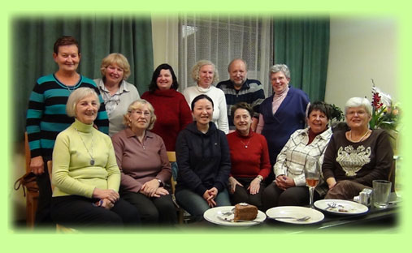
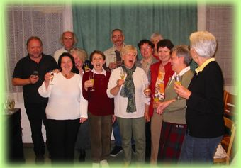

Singen Sie mit in unserem CHOR
Seit Dezember 2012 leitet Frau Hiroe Imaitsumi unseren Chor. Sie ist Nachfolgerin von Young-Gi Kim und unserer langjährigen Chorleiterin Hilde Fellner.


Wir sind ein Kreis sangesfreudiger Menschen, der auch immer offen ist für neue Mitglieder - auch ohne Kenntnis des Notenlesens!
Die einstudierten Musikstücke dienen unter anderem der Gestaltung der Gottesdienste.
Die Chorproben finden jeden Dienstag von 18:30 - 20:00 Uhr statt.